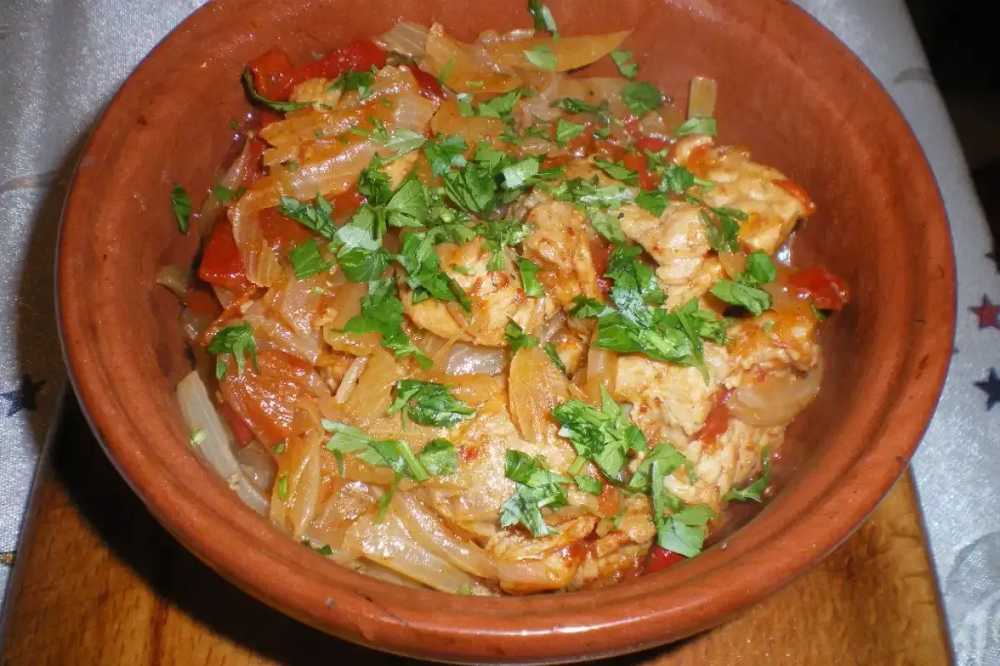

Каварма из курицы
Каварма из курицы
Тушеная курятина с луком, перцем и специями в гювече.
0.400 кг / 13.80 лв

Каварма из свинины
Ароматная свинина с овощами и приправами.
0.400 кг / 13.80 лв
Куриное филе с фасолью
Запечённая курица с фасолью по-болгарски.
0.350 кг / 15.90 лв
Свинина с фасолью
Тушеная свинина с фасолью.
0.350 кг / 15.90 лв
Сыр по-шопски
Запечённый сыр с помидором, яйцом и приправами в гювече.
0.350 кг / 9.90 лв
Куриный бургер с картофелем
Сочный бургер с курицей и картофелем фри.
0.500 кг / 14.00 лв
Свиной бургер с картофелем
Бургер из свинины с жареным картофелем.
0.500 кг / 14.00 лв
Говяжий бургер с картофелем
Классический бургер из говядины с картофелем.
0.500 кг / 14.00 лв
Вегетарианский бургер с картофелем
Овощной бургер с гарниром из картошки.
0.500 кг / 13.80 лв
Омлет натуральный
Пышный омлет из свежих яиц.
0.300 кг / 7.00 лв
Добавки (по желанию)
+ Жёлтый сыр — 0.050 кг / 1.20 лв
+ Белый сыр — 0.050 кг / 1.20 лв
+ Бекон — 0.050 кг / 2.00 лв
+ Ветчина — 0.050 кг / 2.00 лв
+ Грибы — 0.050 кг / 1.20 лв
+ Овощной микс — 0.050 кг / 1.20 лв
+ Луканка — 0.050 кг / 2.00 лв
+ Яйцо — 1 шт / 1.60 лв
Добавки (по избор)
+ Кашкавал — 0.050 кг / 1.20 лв
+ Сирене — 0.050 кг / 1.20 лв
+ Бекон — 0.050 кг / 2.00 лв
+ Шунка — 0.050 кг / 2.00 лв
+ Гъби — 0.050 кг / 1.20 лв
+ Микс зеленчуци — 0.050 кг / 1.20 лв
+ Луканка — 0.050 кг / 2.00 лв
+ Яйце — 1 бр / 1.60 лв
Добавки (по избор):
+ Кашкавал — 0.050 кг / 1.20 лв
+ Сирене — 0.050 кг / 1.20 лв
+ Бекон — 0.050 кг / 2.00 лв
+ Шунка — 0.050 кг / 2.00 лв
+ Гъби — 0.050 кг / 1.20 лв
+ Микс зеленчуци — 0.050 кг / 1.20 лв
+ Луканка — 0.050 кг / 2.00 лв
+ Яйце — 1 бр / 1.60 лв
Английский завтрак
Колбаса, яйцо, сыр, помидоры, оливки, тост.
0.600 гр / 19.90 лв